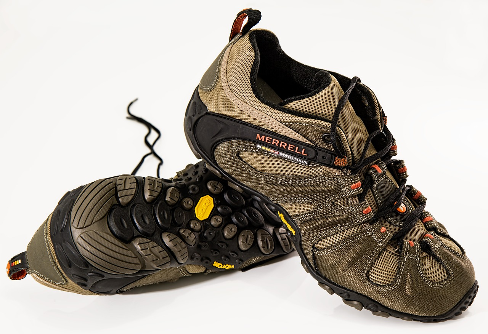

Sección de Damas

Adidas Blancos para Mujer
Estos zapatos Adidas blancos para mujer ofrecen un estilo clásico y limpio, perfecto para cualquier ocasión. Confeccionados con materiales de alta calidad, su diseño incluye el icónico logo en los laterales, aportando un toque distintivo. La suela acolchada brinda comodidad y soporte, ideal para un uso diario. Su versatilidad permite combinarlos fácilmente con looks casuales o deportivos, una opción esencial para quienes buscan comodidad en un solo calzado.
Comprar Ahora $26.99
Zapatillas Blancas con Rosa
Estas zapatillas blancas con detalles en rosa son ideales para mujeres que buscan estilo y comodidad. Su diseño moderno combina una base blanca impecable con acentos en tonos rosados, aportando un toque femenino y fresco. Fabricadas con materiales de alta calidad, ofrecen una suela acolchada para mayor confort durante todo el día. Perfectas para combinar con looks casuales o deportivos, son versátiles y ligeras, ideales para cualquier ocasión.
Comprar Ahora $45.99
Zapatos Deportivos para Mujer
Estos zapatos deportivos negros para mujer combinan estilo y funcionalidad. Su diseño moderno y minimalista es perfecto para entrenamientos o uso diario. La parte superior ofrece transpirabilidad, mientras que la suela acolchada asegura comodidad en cada paso. Su color negro los hace fáciles de combinar con cualquier atuendo, aportando un look elegante y versátil. Perfectos para quienes buscan rendimiento y estilo en un solo par de zapatos.
Comprar Ahora $54.00
Sandalias Beige para Mujer
Sandalias beige para mujer, elegantes y versátiles. Confeccionadas en material suave, cuentan con tiras ajustables que brindan comodidad y soporte. Su plantilla acolchada garantiza un paso ligero, mientras que la suela antideslizante ofrece seguridad en cada movimiento. Perfectas para el día a día o una salida especial. ¡Un must-have en tu armario!
Comprar Ahora $39.99
Sandalias Negras para Mujer
Estas sandalias negras para mujer destacan por su estilo moderno y versátil. Con un diseño elegante y atemporal, son perfectas para complementar tanto looks casuales como más formales. Fabricadas con materiales de alta calidad, ofrecen una suela cómoda y flexible, ideal para un uso prolongado. El color negro aporta un toque de sofisticación, haciéndolas fáciles de combinar con cualquier atuendo. Su diseño ligero y ajustable asegura un calce perfecto, convirtiéndolas en una opción esencial para cualquier armario.
Comprar Ahora $57.99
Tacoes Plateados para Mujer
Estos tacones plateados para mujer son el complemento perfecto para añadir un toque de glamour a cualquier outfit. Con un diseño elegante y sofisticado, su acabado brillante captura la luz, creando un efecto deslumbrante en cada paso. Ideales para eventos formales o salidas nocturnas, ofrecen una altura cómoda que estiliza la figura sin comprometer el confort. Su estilo versátil permite combinarlos fácilmente con vestidos o conjuntos más atrevidos, aportando siempre un aire chic y moderno. Estos tacones plateados son la opción ideal para destacar con elegancia y confianza.
Comprar Ahora $49.99
Zapatos Casuales
Estos zapatos casuales reforzados son ideales para quienes buscan comodidad y durabilidad. Fabricados con materiales resistentes, cuentan con refuerzos en las áreas clave para mayor soporte. Su diseño moderno y ligero los hace perfectos para el uso diario, mientras que la suela antideslizante proporciona tracción en diversas superficies. Un complemento versátil para cualquier guardarropa.
Comprar Ahora $25.99
Zapatos Deportivos Doble Calzado
Estos zapatos deportivos de color verde y blanco son perfectos para un look dinámico y fresco. Con una parte superior de malla transpirable y detalles sintéticos, ofrecen comodidad y soporte. La suela de goma proporciona excelente tracción, ideal para entrenamientos y actividades al aire libre. Su diseño moderno los convierte en una opción versátil para el uso diario y el deporte.
Comprar Ahora $30.99
Zapatos Deportivos Color Azul
Estos zapatos deportivos de color azul son perfectos para quienes buscan estilo y rendimiento. Con una parte superior de malla transpirable, ofrecen comodidad y ligereza. La suela de goma brinda excelente tracción, ideal para entrenamientos y actividades al aire libre. Su diseño moderno los hace versátiles, perfectos para el uso diario y para complementar cualquier atuendo activo.
Comprar Ahora $70.99
Botas Premium
Estas botas premium son la máxima expresión de elegancia y durabilidad. Fabricadas con cuero de alta calidad, ofrecen un acabado refinado y detalles artesanales. El diseño robusto proporciona soporte y confort, mientras que la suela de goma asegura tracción en diferentes superficies. Ideales para ocasiones formales o para un look sofisticado en el día a día, son un must-have en cualquier armario.
Comprar Ahora $250.99
Calzado Elegante de Cuero
Este calzado elegante de cuero es ideal para ocasiones formales. Con un diseño clásico y acabado pulido, está hecho de cuero de alta calidad que garantiza durabilidad y confort. La suela delgada aporta sofisticación, mientras que el interior acolchado asegura un ajuste cómodo. Perfecto para eventos y reuniones, es un esencial en cualquier guardarropa masculino.
Comprar Ahora $150.99
Calzado de Plata
Este calzado elegante de cuero en color plata oscuro es perfecto para ocasiones especiales. Su diseño clásico y acabado brillante destacan con sofisticación. Fabricado en cuero de alta calidad, ofrece durabilidad y confort. La suela delgada añade un toque refinado, mientras que el interior acolchado garantiza un ajuste cómodo Hace juego con su anteriro variante.
Comprar Ahora $170.99